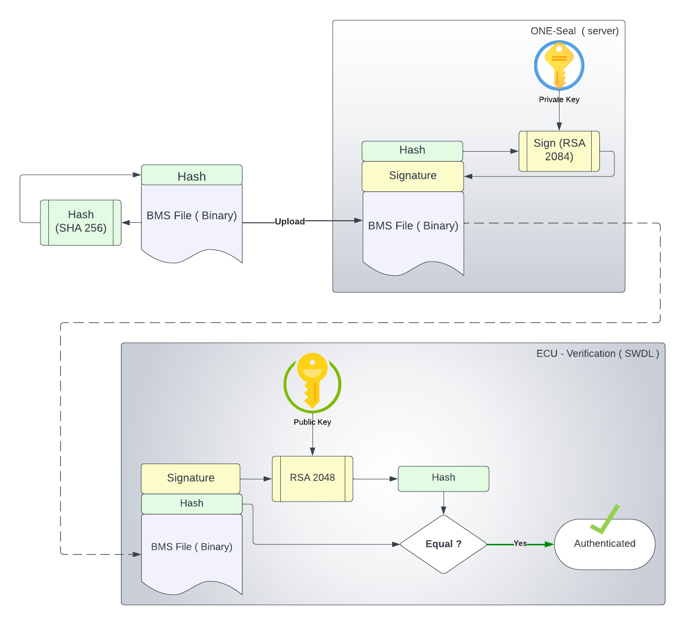

1)What are Digital Signatures?
Digital signatures in cars act like invisible security seals, safeguarding data like software updates and sensor readings. These unique digital fingerprints verify the data's origin and integrity, preventing tampering and ensuring trust in updates and diagnostics . They're like electronic guardians, keeping your car healthy and secure on the road.
2)File Structure Overview?
3)Expected Inputs from the user?
- Header -> 0xCOFFEEEE
- Rollback ID
- Length of File
- SHA256 - Hash of the file content
- RSA2048 - Signature of the Hash
4)Certificate Authority
Imagine a secure pyramid of trust in the digital world: the three-level chain of certificates. At the top sits the Root CA, the grand emperor, trusted by everyone. Below, Intermediate CAs, the trusted advisors, vouch for other certificates. Finally, at the base, Leaf Certificates act like passports, issued to websites or applications and verified by the CAs above. Each CA signs the certificate below, creating a chain of trust that confirms authenticity and legitimacy. This multi-layered validation ensures only those approved by the trusted root have access, keeping the digital realm safe and secure.